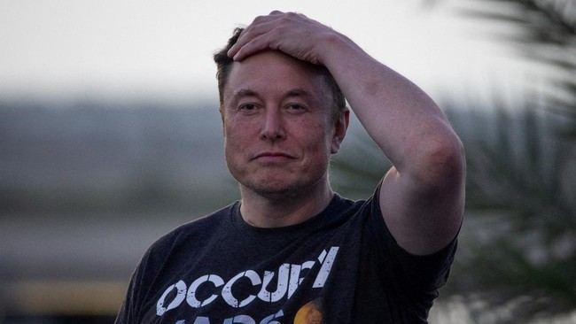
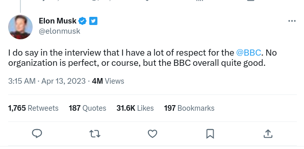

Kamis, 13 Apr 2023 17:00 WIB
Jakarta, CNN Indonesia -- CEO Twitter Elon Musk mengakui mengatur Twitter "benar-benar pusing" dan seperti naik "rollercoaster". Ia bahkan mengaku tak ragu menjual Twitter jika ada orang tepat yang berminat.
Hal tersebut diungkapkan Musk dalam wawancara bersama BBC di kantor
Twitter di San Francisco. Dalam wawancara itu, Musk ditanya soal
penyesalannya membeli Twitter.
Musk lalu menjawab "level kesakitannya sangat-sangat tinggi. Ini bukanlah
seperti pesta." Miliarder kelahiran Afrika Selatan itu juga mengatakan
masa kepemimpinannya "Tidak membosankan dan mirip seperti rollercoaster."
Musk mengakui, dalam beberapa bulan terakhir situasinya cukup membuat stres. Namun, ia menegaskan pembelian Twitter merupakan langkah yang tepat. Elon Musk membeli Twitter pada Oktober tahun lalu dan langsung membuat kontroversi. Musk antara lain mem-PHK banyak karyawan Twitter termasuk CEO, Parag Agrawal. Orang terkaya kedua di dunia itu juga membuat Twitter Blue, yang membuat centang biru di Twitter kini bisa didapat dengan cara berlangganan. Tindak-tanduk Musk itu sering mengundang kritik dari berbagai pihak.
Musk mengakui, dalam beberapa bulan terakhir situasinya cukup membuat stres. Namun, ia menegaskan pembelian Twitter merupakan langkah yang tepat. Elon Musk membeli Twitter pada Oktober tahun lalu dan langsung membuat kontroversi. Musk antara lain mem-PHK banyak karyawan Twitter termasuk CEO, Parag Agrawal. Orang terkaya kedua di dunia itu juga membuat Twitter Blue, yang membuat centang biru di Twitter kini bisa didapat dengan cara berlangganan. Tindak-tanduk Musk itu sering mengundang kritik dari berbagai pihak.
Meski demikian, Musk mengklaim semua hal "berjalan cukup baik" dan
menyatakan "penggunaan Twitter meningkat dan "Twitter bekerja".
Musk mengaku terkadang tidur di kantor karena beban kerja tersebut. Ia
bahkan mengungkapkan punya tempat khusus di perpustakaan "yang tidak
disentuh oleh orang lain."
Disinggung soal finansial Twitter, Musk mengaku perusahaan sekarang
"sedikit kembali seperti semula" karena banyak pengiklannya yang sudah
kembali. Sebelumnya, banyak pengiklan di Twitter hengkang karena beberapa
kebijakan Musk yang kontroversial. "Kami bisa menguntungkan atau lebih
persisnya, mendapat arus keuangan yang positif pada paruh ini jika
semuanya berjalan baik. Saya kira, semua pengiklan telah kembali atau
paling tidak mereka mengatakan akan kembali," kata Musk.
Deret kebijakan kontroversial Musk juga membuat Twitter diterpa isu finansial yang membuat banyak karyawannya diberhentikan. Terkait hal itu, Musk mengaku mem-PHK ribuan karyawan bukanlah hal mudah. Jumlah karyawan Twitter kabarnya menyusut dari 8000 ke 1500 orang. Musk mengakui "tidak mungkin untuk berbicara dengan orang sebanyak itu secara satu per satu," Usai wawancara tersebut, Musk pun mengungkapkan kesan-kesannya. "Saya benar-benar mengatakan di wawancara bahwa saya sangat menaruh hormat ke BBC. Tidak ada organisasi yang sempurna, tentu saja, tetapi BBC secara keseluruhan sangat baik," katanya.
CNN Indonesia |
||
|---|---|---|
|
Menyajikan berita terhangat langsung melalui handphone Anda |
TELUSURI |
IKUTI KAMI |